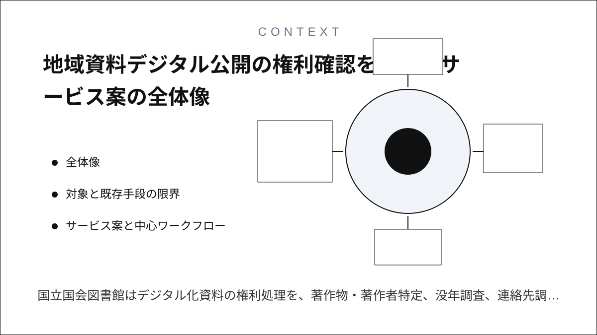
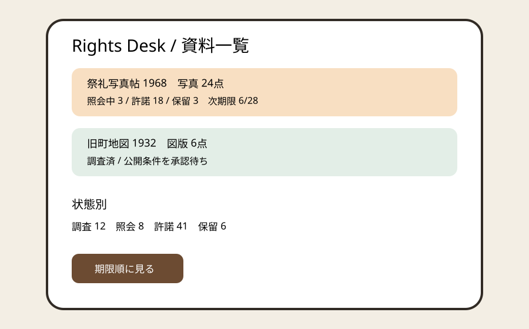
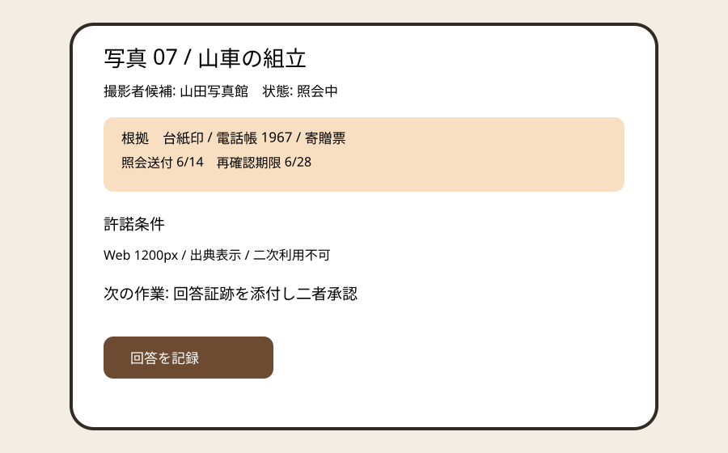
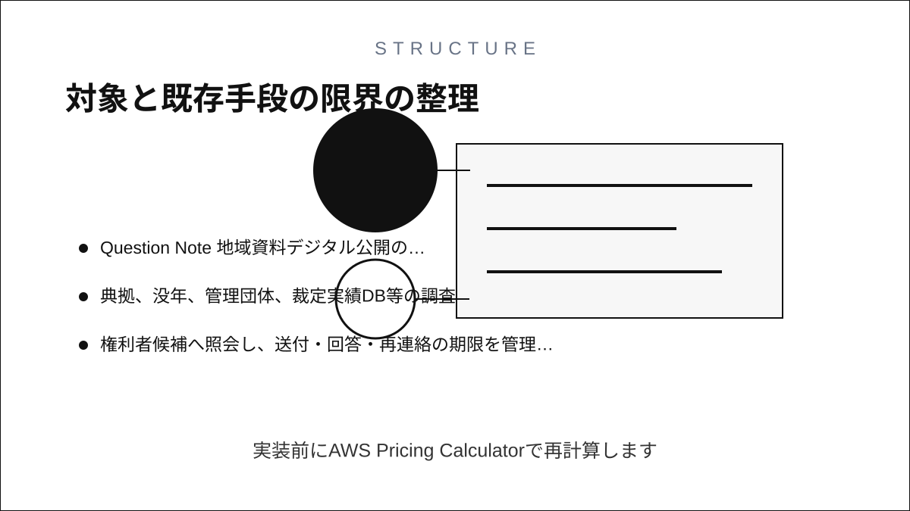
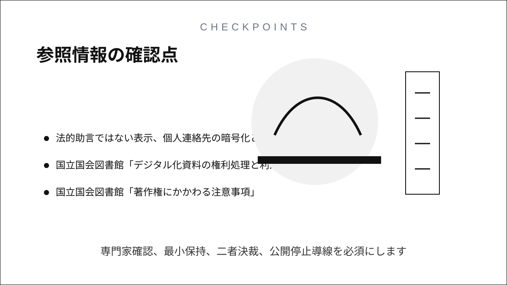

Question Note
地域資料デジタル公開の権利確認をつなぐサービス案



全体像
国立国会図書館はデジタル化資料の権利処理を、著作物・著作者特定、没年調査、連絡先調査、許諾依頼等に分けて説明しています。文化庁は権利者不明等の場合の裁定制度と、2026年4月開始の未管理著作物裁定制度を案内しています。小規模資料館では一資料に写真、文章、地図が混在し、調査メモ、メール、公開CMSの根拠が分かれます。

法的判断を自動化せず、資料登録 → 権利要素分解 → 調査 → 照会 → 許諾条件 → 公開可否 → 再確認期限を証跡付きで閉じます。
対象と既存手段の限界
| 利用者 | 課題 | 既存手段の限界 |
|---|---|---|
| 地域資料館・図書館 | 資料内の権利要素特定 | 台帳は現物情報と公開根拠を結べない |
| 学芸員・司書 | 調査と照会の引き継ぎ | メールでは未回答と次期限を集計できない |
| 公開担当 | 許諾範囲の反映 | 表計算は画像サイズ・期間・表示条件の履歴が弱い |
汎用チャットは証拠の所在と決裁を固定できず、CMSだけでは非公開資料を含む調査過程を扱えません。
サービス案と中心ワークフロー
- 資料と構成要素を登録し、著作者表示、発行年、入手経緯を記録する。
- 典拠、没年、管理団体、裁定実績DB等の調査先と結果を残す。
- 権利者候補へ照会し、送付・回答・再連絡の期限を管理する。
- 許諾範囲、期間、表示、二次利用条件を二者確認する。
- 公開・限定・保留をCMS用CSVへ出し、期限時に再確認する。
100万円規模の収益
地域資料館、郷土資料室、小規模大学アーカイブへ直接営業し、20館 × 月額4,000円 × 12か月 + 導入研修60,000円 = 売上1,020,000円。初年度に接触できる50館中20館を対象にします。
システム要件
- 館・資料群・担当別権限、二者決裁、監査履歴
- 資料内著作物、著作者候補、典拠、照会、回答証跡、許諾条件
- 公開状態・期限・差し止めの即時反映、CSV入出力
- 法的助言ではない表示、個人連絡先の暗号化と削除期限
AWSシステム要件と支出
東京リージョン、無料枠・クレジット除外、1 USD = 155円。実装前にAWS Pricing Calculatorで再計算します。
| AWS | 用途 | 想定 | 月額 | 年額 |
|---|---|---|---|---|
| S3 + CloudFront | 管理画面・低解像度確認画像・証跡 | 40GB、月4万配信 | 1,500円 | 18,000円 |
| Cognito | 館・担当・承認者認証 | 250 MAU | 700円 | 8,400円 |
| API Gateway | 資料・調査・許諾API | 月18万req | 600円 | 7,200円 |
| Lambda | 期限判定、CSV、通知 | 月18万実行 | 900円 | 10,800円 |
| DynamoDB | 館、資料、著作物要素、著作者候補、典拠調査、照会先、送受信、許諾範囲・期間・表示条件、公開判定、再確認期限、監査履歴 | 7万件、on-demand | 1,900円 | 22,800円 |
| SES | 照会・再連絡・期限通知 | 月3,000通 | 600円 | 7,200円 |
| CloudWatch | エラー・監査ログ | 月5GB | 1,200円 | 14,400円 |
| AWS Backup | 台帳・証跡保全 | 月35GB | 900円 | 10,800円 |
| AWS Budgets | 予算超過通知 | 2予算 | 200円 | 2,400円 |
| Route 53 | 独自ドメインDNS | 1 zone | 100円 | 1,200円 |
| 合計 | AWS利用料 | 8,600円 | 103,200円 | |
開発、人員、利益
AIでCRUD、照会文、期限テスト、CSV初稿を作り、要件2週、試作2週、本実装5週、実証3週の12週。1人が開発・導入・運営を担い、著作権専門家レビュー15万円、情報設計8万円、脆弱性診断10万円を外注します。
初年度支出はAWS 103,200円、ドメイン3,000円、外注330,000円、営業・運営180,000円、予備費80,000円の計696,200円。売上 - 支出 = 利益より1,020,000円 - 696,200円 = 323,800円です。
最初の実証とリスク
1館・30資料を匿名化して、根拠探索時間、未回答の発見、公開条件転記ミスを比較します。誤った法的判定、連絡先漏えい、許諾範囲外公開が主リスクです。専門家確認、最小保持、二者決裁、公開停止導線を必須にします。
参照情報
